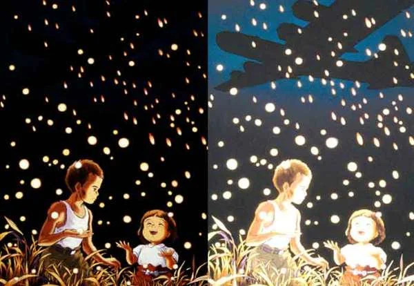
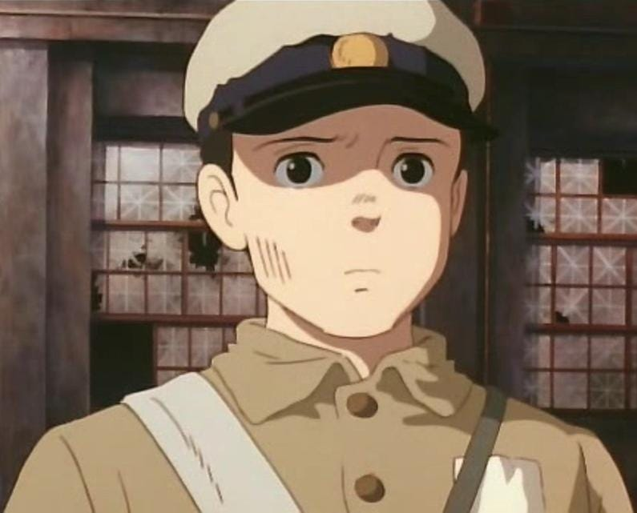
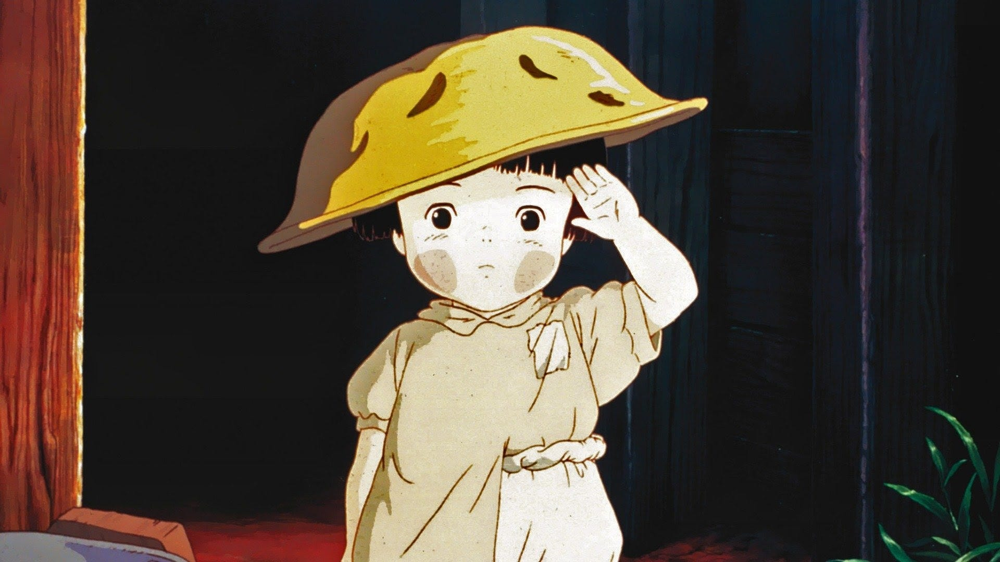
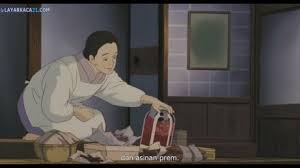
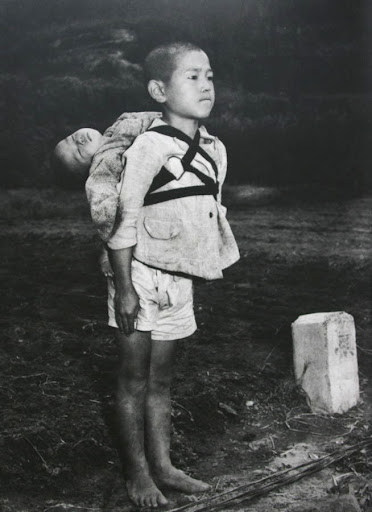

Sebuah kisah menyentuh tentang cinta, kehilangan, dan ketahanan ditengah peperangan
Sinopsis

Grave of the Fireflies adalah film animasi Jepang yang dirilis pada tahun 1988, disutradarai oleh Isao Takahata dan diproduksi oleh Studio Ghibli. Film ini mengisahkan perjuangan dua saudara, Seita dan Setsuko, dalam menghadapi kerasnya hidup ditengah reruntuhan Jepang pasca Perang Dunia II. Setelah kehilangan ibu mereka akibat serangan udara, mereka harus berjuang sendiri ditengah kejamnya dunia yang tak lagi peduli
Kisah ini menggambarkan bagaimana harapan bisa bersinar seperti kunang-kunang di malam yang gelap, tetapi juga rapuh dalam kenyataan yang kejam. Dengan visual yang indahdan alur cerita yang menggugah emosi, film ini tidak hanya menjadi potret penderitaan akibat perang, tetapi juga simbol cinta, pengorbanan, dan kehilangan yang mendalam
Tokoh Utama
Seita

Seorang remaja penuh tanggung jawab yang menjadi pelindung adiknya setelah kehilangan orang tua mereka. Ia berusaha sekuat tenaga untuk bertahan hidup dan memberikan yang terbaik bagi Setsuko, meskipun harus menghadapi kejamnya realitas perang
Setsuko

Gadis kecil berusia empat tahun yang penuh kepolosan dan keceriaan. Meskipun hidup dalam kesulitan, ia tetap berusaha menemukan kebahagiaan dalam hal-hal kecil, seperti bermain dengan kunang-kunang. Namun, tubuhnya yang lemah membuatnya rentan terhadap kelaparan dan penyakit
Bibi Seita & Setsuko

Sosok yang awalnya menampung Seita dan Setsuko setelah mereka kehilangan rumah. Namun, seiring berjalannya waktu, ia mulai bersikap kasar dan tidak peduli, memaksa Seita dan Setsuko untuk mencari cara bertahan sendiri
Trailer
Fun Fact
Film ini didasarkan pada novel semi-autobiografi karya Akiyuki Nosaka, yang mengalami pengalaman serupa saat perang. Ia menulis cerita ini sebagai bentuk penyesalan karena tidak dapat menyelamatkan adiknya.

Tokoh Inspirasi Film Grave of the Fireflies
Isao Takahata, sang sutradara, juga pernah mengalami Perang Dunia II dan ingin menyampaikan pesan kuat tentang dampaknya melalui film ini.
Kunang-kunang dalam film ini menjadi simbol kehidupan yang singkat namun indah, mencerminkan nasib Seita dan Setsuko yang berjuang hingga akhir.
Film ini sering disebut sebagai salah satu film animasi paling menyedihkan sepanjang masa dan dianggap sebagai film anti-perang yang sangat emosional.